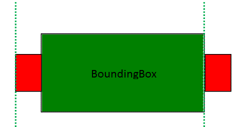
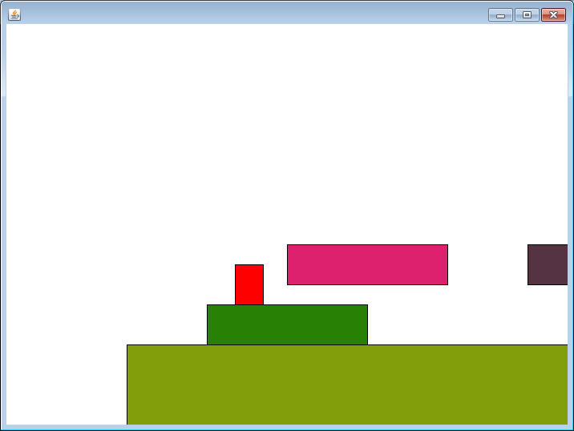

Moving to the Left/Right
So far we have a JumpMan that stands in one place and jumps. Next up is to get some horizontal motion going, but something to keep in mind is that in this style of game, it is the background that actually moves. This will involve some manipulation of the classes that we've been working on.
Block
The Block class is no longer a stationary object. Add the following two methods:
public void moveLeft(int num)
public void moveRight(int num)
These methods do almost exactly the same thing. They add or subtract the parameter num from the x coordinate.
JumpMan
Just as we did in the y direction, the JumpMan will have to align himself to the left or right of a HitBox at some point. Add the following two methods:
public void xAlignToTheLeft(HitBox box)
public void xAlignToTheRight(HitBox box)
The purpose of the xAlignToTheLeft method is to set the x value of the JumpMan to be right up against the left side of the HitBox, while the xAlignToTheRight will place him on the other side.

PlatformerCanvas
The left/right motion of the JumpMan will be different than the way the jump is handled. Instead of the KeyListener directly telling the JumpMan to move, add two booleans(or ints if you're more comfortable) as instance fields named left and right. When the left key is pressed, set the boolean left to true, when released set it back to false. Repeat the process for the right boolean. This is similar to how we've controlled other games in the past.
In the onTimerTick method, create an if statement to see if the left boolean is true. If it is, loop through all the blocks and do the following to each block:
- tell it to move to the right by 10.
- similar to how it was handled in the y direction,
have an if statement that checks to see if the JumpMan's HitBox intersects
the Block's HitBox and if so call the xAlignToTheRight method, passing in
the Block's HitBox.
Repeat the above process, but this time check the right boolean, move the Blocks to the left, and then xAlignToTheLeft
In the constructor, modify the code so that it adds blocks with the following parameters:
100, 400, 600, 100
200, 350, 200, 50
300, 275, 200, 50
600, 275, 200, 50
900, 175, 200, 50
Test out the program. When you move to the left or right, all the blocks should move around you. If you try and move to the right/left and a block is in the way, it will push you around a little bit. This is normal for this stage. If the JumpMan gets pushed off the screen, you can always use the mouse to bring him back.
